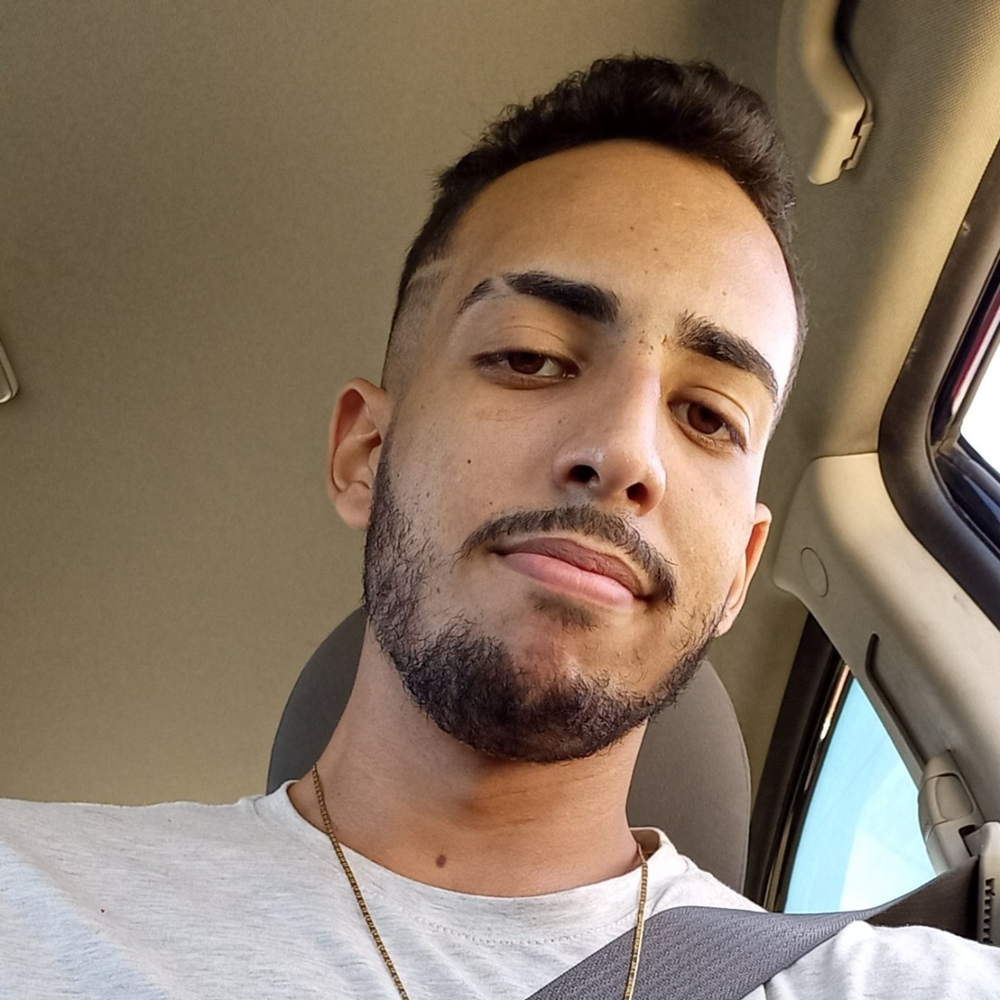
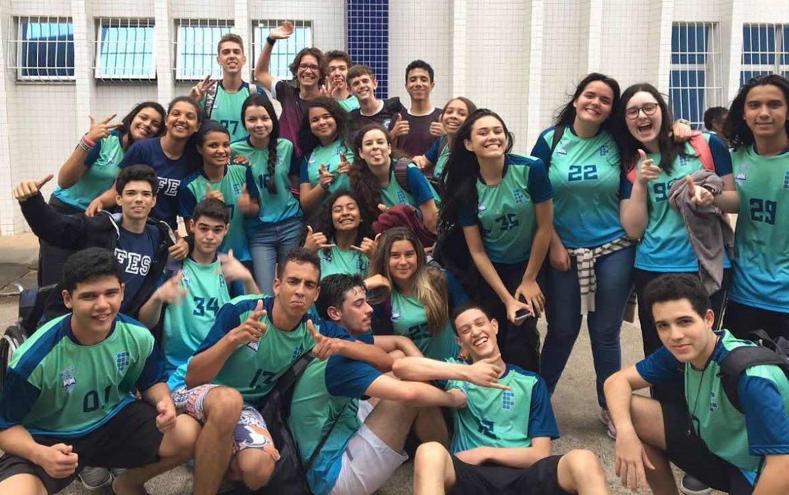
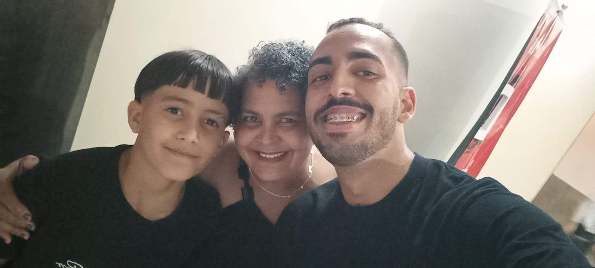
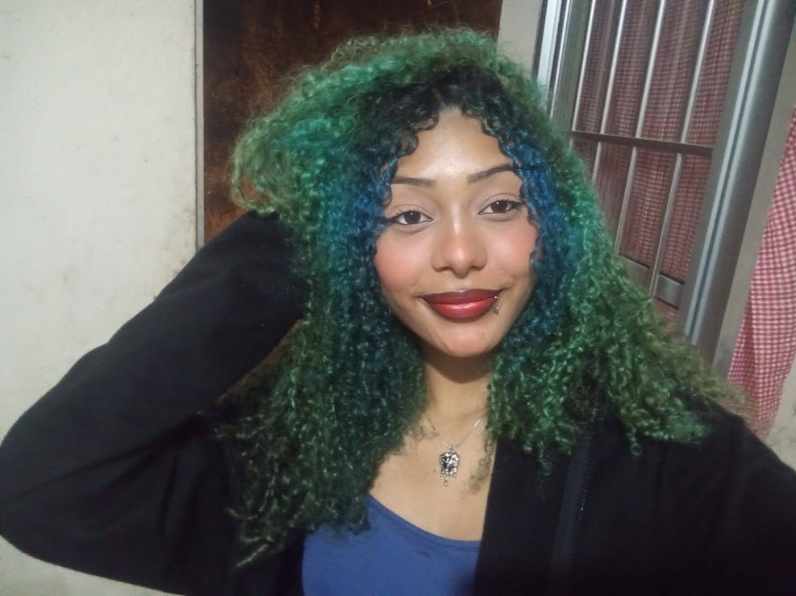

| |
|
|
|
|
|---|
| Quem Sou | Profissão | Foto |
|---|---|---|
| Olá! Sou o Ryan Costa Mendes, tenho 25 anos. Nascido
e criado em Cariacica. Possuo habilidades em HTML e CSS, estou desenvolvendo minhas competências em JavaScript, e almejo me especializar nessas áreas. Cursei o ensino fundamental na EMEF Padre Gabriel Roger Maire, escola municipal do meu bairro. Fiz o ensino médio no Instituto Federal do Espírito Santo, campus Cariacica, onde me formei como técnico em Administração integrado ao ensino médio. Nesse período, cursava também informática profissionalizante. Sempre gostei de computadores e, nesse curso, aprendi mais sobre montagem, configuração e manutenção de computadores, que é a área em que trabalho hoje. Atualmente, curso Ciência da Computação na UVV. Pretendo me profissionalizar na área e trabalhar com um time de desenvolvedores. |
Cientista da Computação Vendedor - Coimbra Computadores |
 |
| Minha música Favorita |
|
|---|---|
 |
Sempre acreditei na educação, e onde ela pode nos levar. Sempre fui muito
apaixonado por tecnologia e as inovações que podemos ter através dela. Gosto muito de pesquisar sobre o assunto, apredner temas novos e mais espoecíficos da área. No tempo vago eu gosto de ouvir música, sempre gostei de um Rap, Rock, Eletrônica e Funk. Eternamente apaixonado por jogos, o que mais tenho horas de diversão é Minecraft, desde os 9 anos de idade. Alguns desses amigos da foto levo na minha vida até hoje, são pessoas muito importantes para mim. |
| Também adoro filmes, ir ao cinema. Tenho uma família linda, minhae mãe e meu sobrinho, que estão comigo desde o início e me dão muito apoio nessa jornada. |  |
 |
Um Agradecimento ainda mais que especial ao grande amor da minha vida, que sempre me motiva e incentiva a correr atrás desse sonho, que mesmo apesar de adversidades de horarios e contra-tempos, é a pessoa que está ao meu lado todos os dias. Eu te amo! |